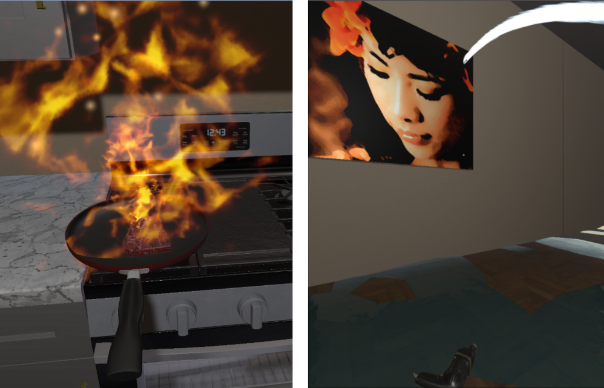

Beyond Entertainment: Virtual Reality as a Tool for Engaging Insurance Risk Communication

(opens in new tab)
Venue. HCI Int. Posters (2026)
Materials.
DOI(opens in new tab)
Abstract. Virtual Reality (VR) has emerged as a transformative technology, primarily recognized for its impact on the entertainment and social networking industries. However, its potential extends beyond these domains, finding valuable applications in fields such as medicine, tourism, and education. With its ability to create experiences with a high level of immersion, presence and interactivity, VR opens new possibilities for communicating complex knowledge and abstract risks. In this paper, we explore the use of VR in the insurance sector, specifically focusing on risk communication. We present a VR prototype that immerses potential customers in realistic fire and water-damage scenarios, illustrating risks that can be mitigated through insurance coverage. This immersive experience aims to enhance the understanding and perceived importance of insurance, potentially leading to more informed decision-making and a more engaging customer experience. Developed in collaboration with a network of insurance companies, our prototype was evaluated to ensure usability and effectiveness.
Link to this page: